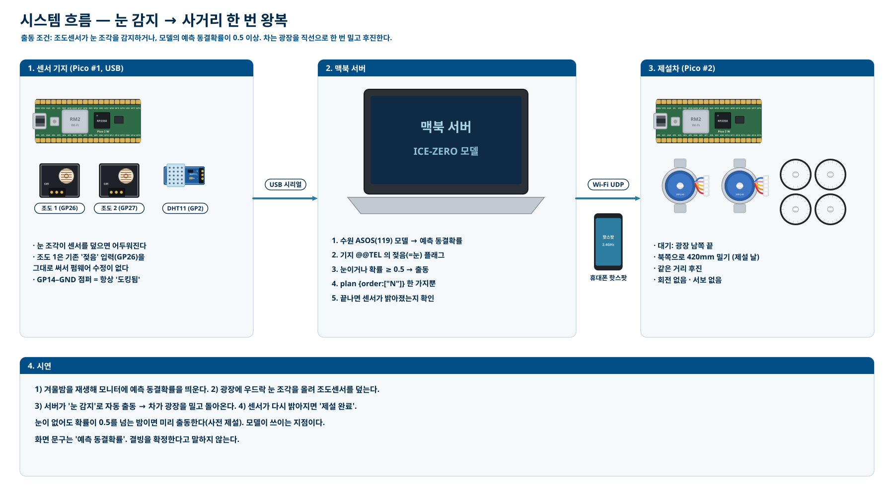
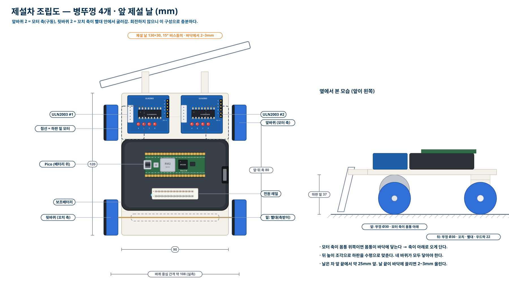
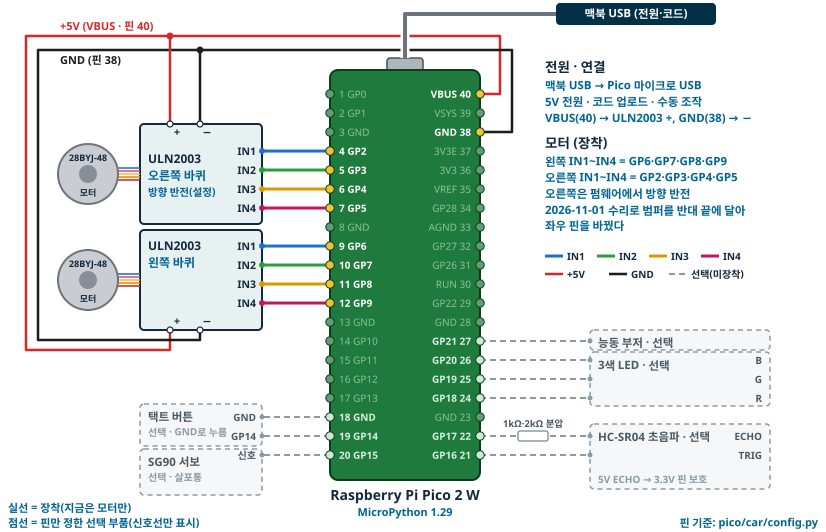
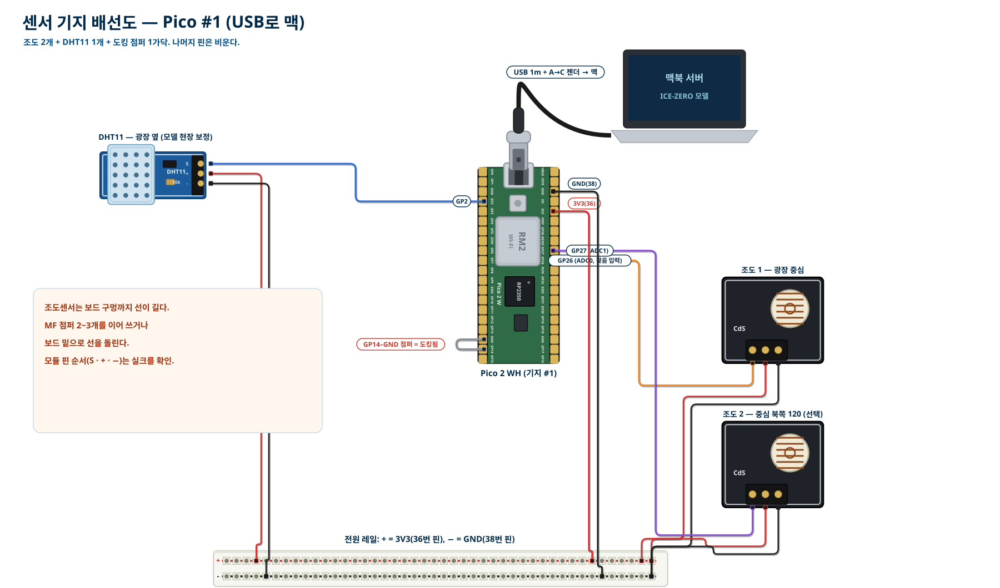
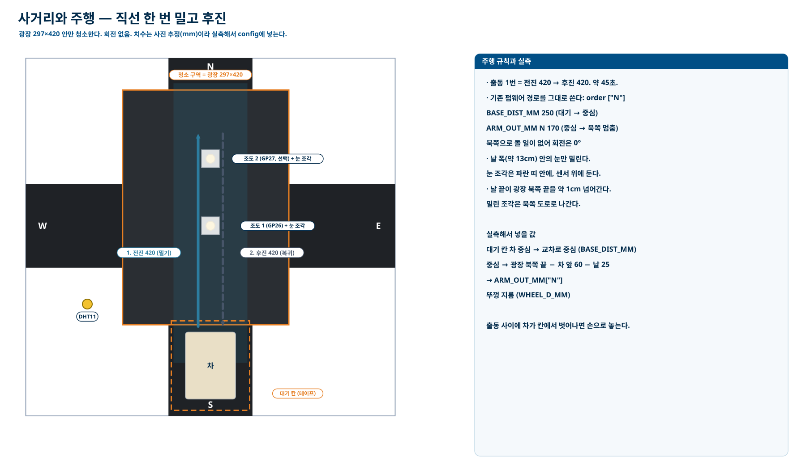
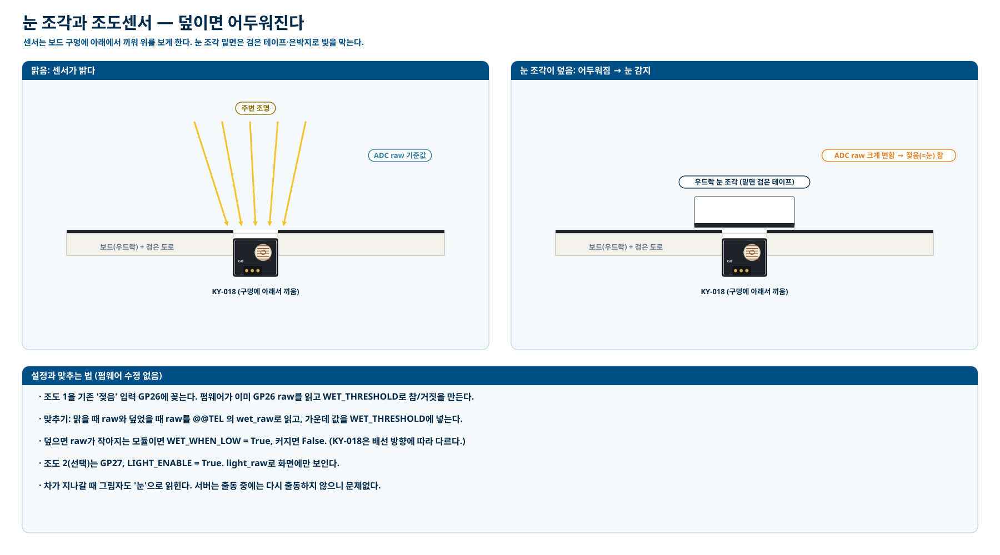
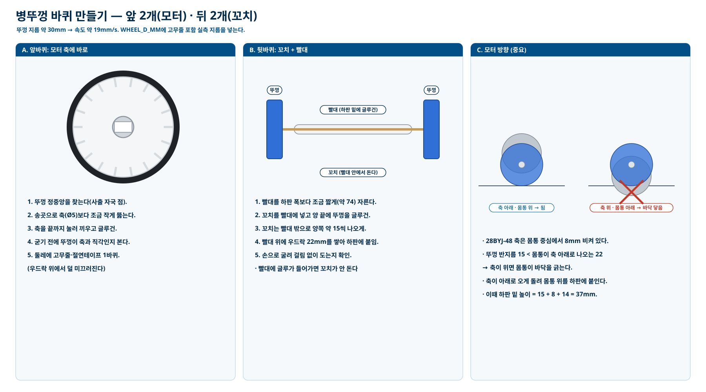
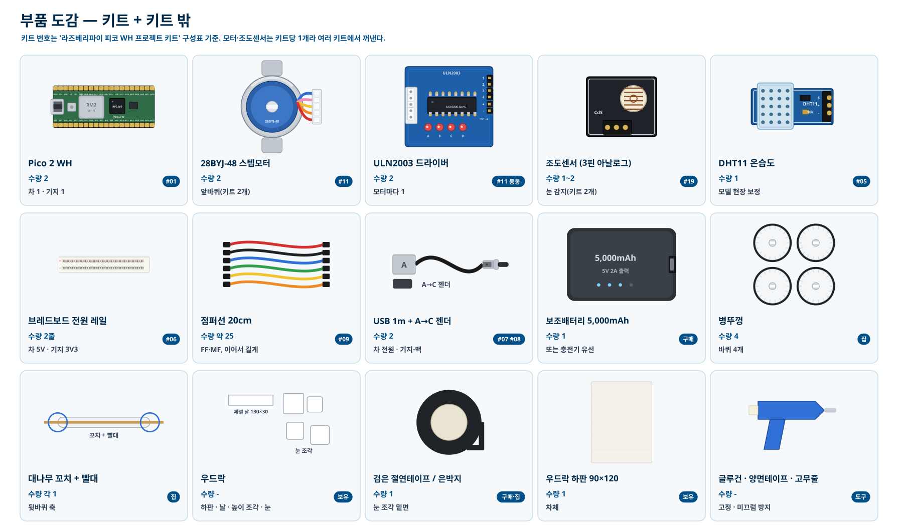
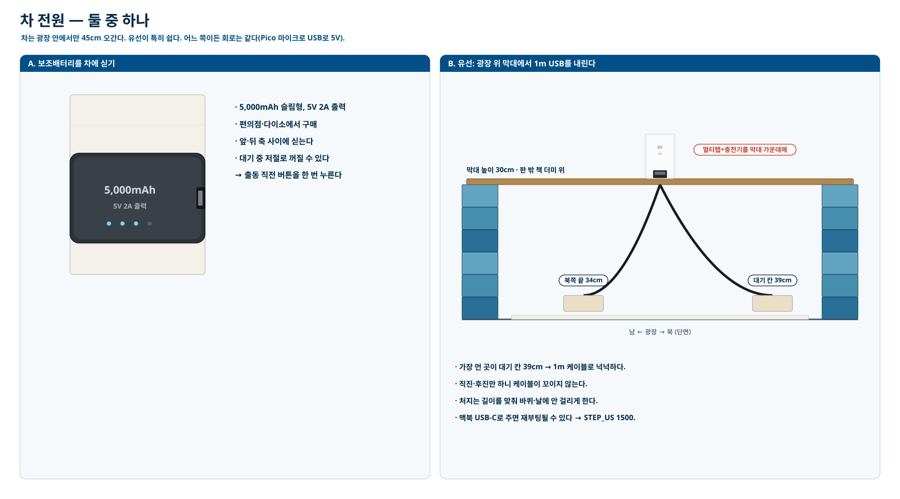
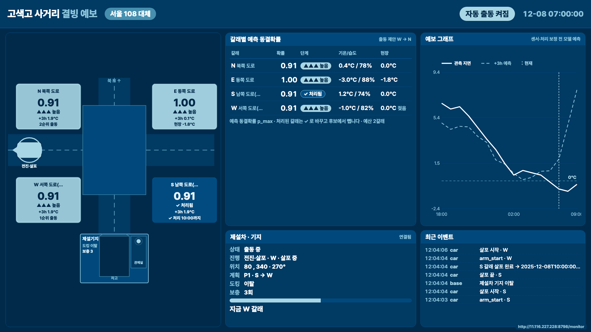

어떻게 움직이나
눈 감지광장 바닥의 조도센서를 우드락 눈 조각이 덮으면 어두워진다. 센서 기지 Pico가 맥북 서버로 알린다.
출동 판단서버가 눈 감지, 또는 ICE-ZERO 모델의 예측 동결확률 0.5 이상을 확인하면 출동시킨다.
사거리 왕복제설차가 광장 남쪽 끝에서 북쪽으로 420mm 밀고, 같은 길을 후진해 돌아온다. 회전 없이 약 45초.
완료 확인센서가 다시 밝아지면 제설 완료. 눈이 남아 있으면 10초 뒤 한 번 더 간다.
설계도 PDF
최신 · 지금 만드는 것
사거리 왕복 제설차 설계도
병뚜껑 4개 · 제설 날 · 조도센서 눈 감지 · 실물 부품 배선도 · 조립도 · 바꾼 코드 · 시험 순서 (17쪽)
PDF 열기 →그림 (최신 설계)


















모니터 화면

이 페이지는 설계도를 보여 주는 정적 사이트다. 실제 모니터 화면은 맥북에서 python3 server/gosaek_server.py를 실행한 뒤 같은 Wi-Fi에서 http://<맥 IP>:8000/monitor로 연다.
부품 (키트 밖)
| 부품 | 수량 | 쓰는 곳 |
|---|---|---|
| 보조배터리 5,000mAh (5V 2A), 또는 충전기 + 멀티탭 + 막대 | 1 | 차 전원 |
| 병뚜껑 | 4 | 바퀴 |
| 대나무 꼬치 + 빨대 | 각 1 | 뒷바퀴 축 |
| 우드락 | - | 하판 · 제설 날 · 높이 조각 · 눈 조각 |
| 검은 절연테이프 또는 은박지 | 1 | 눈 조각 밑면 |
| 글루건 · 양면테이프 · 고무줄 · 커터 | - | 고정 |
모델
ICE-ZERO 경량 모델(XGBoost)이 관측소 지면온도를 +1·3·6시간 예측하고 동결확률로 바꾼다. 학교에서 0.4km 떨어진 수원 관측소(119)의 2020–2025 겨울(11·12·1·2월) 자료로 학습했다(≤2024 학습, 2025 시험). 센서 결측 표시(-9.0)와 한 시간짜리 튐은 학습 전에 걸러 냈다. 화면 값은 결빙 확정이 아니라 예측 동결확률이다.
| 2025 시험 (수원 119) | +0h | +1h | +3h | +6h |
|---|---|---|---|---|
| 모델 RMSE (°C) | 0.80 | 1.26 | 1.86 | 2.24 |
| 지속 예측 RMSE | 1.89 | 1.89 | 4.67 | 7.01 |
| 공기온도로 대신 RMSE | 3.29 | 3.65 | 4.86 | 6.53 |
2025 겨울밤 118개 중 밤사이(18시 이후) 결빙이 시작된 27밤에서 24밤을 1시간 이상 미리 경보했다(95% 구간 72–96%, 선행 중앙값 2시간). 결빙 없던 33밤 중 6밤은 오경보였다(18%, 95% 구간 9–34%). 나머지 58밤은 18시에 이미 영하라 경보가 쉬운 경우다. +3·+6시간의 지속 예측은 하루 기온 변화를 못 따라가는 약한 기준이라, 그 차이는 크게 해석하지 않는다.